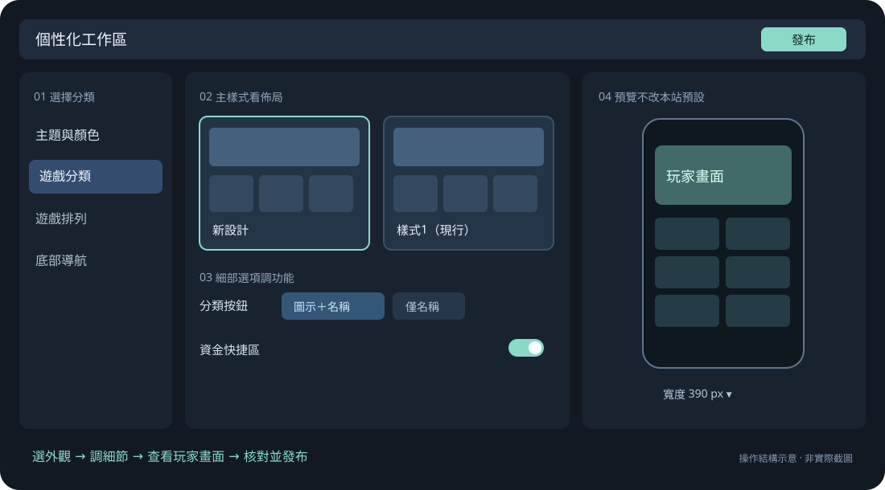
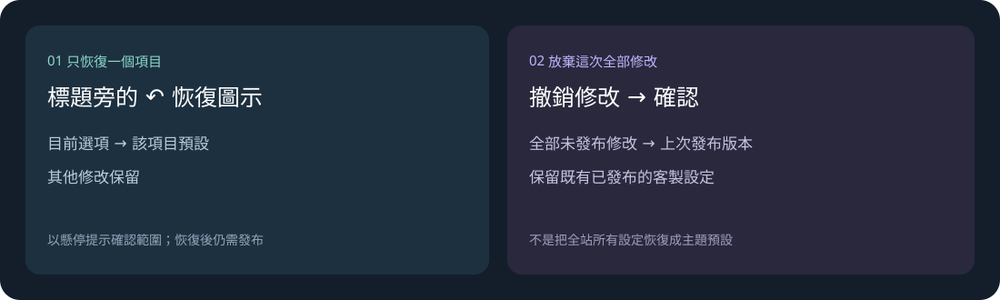

本站用什麼，玩家能選什麼
- 管理員設定本站預設的主題與配色，也決定哪些選項要開放給玩家。
- 玩家只能選已開放的外觀。在右側預覽試選，不會改掉本站預設。
有秩序地修改外觀
先選本站主題，再調整需要的功能。邊改邊看玩家畫面，確認後再發布。

PH、IN、SF 目前各有一種配色，每個元件也只有一種樣式。仍可調整的功能會留在左側選單；固定項目會隱藏。切換本站主題會載入新主題預設，不帶入原主題的外觀設定。
辨認狀態：左側色塊是正在編輯的項目，亮起的筆形圖示表示有修改。標題右邊的圖示可查看預設或自訂狀態，也能恢復設定、開關元件。滑鼠停在圖示上，或用鍵盤移到圖示，就能看說明。
只改回一個設定，用該項目的恢復圖示；想放棄這次全部修改，則用「撤銷修改」。

操作UI 與 PD／PM 對照「樣式1（現行）」和新設計，看看各自適合什麼情境、操作上有什麼不同。
決定決定保留現行選項，或換成新設計。放在一起比較，不代表最後全部都會留下。
操作在遊戲分類選樣式，再到「細部設定」調分類按鈕與資金快捷區。遊戲排列、活動摘要各自調整；只會顯示這個主題能調的項目。
結果各區塊合起來就是首頁，不需要另外選一套整頁版面。
操作在「主題與顏色」設定本站預設和玩家可選範圍。例如 NG 可以只開放橙白、藍白；PH、IN、SF 目前各只有一種配色。
結果本站預設必須是已開放的選項。只開放一種，玩家就固定使用那一種。
操作在右側預覽選頁面、玩家配色與主題。登入前後在右上切換，寬度在底部選擇，也可以自己輸入。
結果這些操作只改預覽。主題或配色只剩一種時，下拉選單會停用；把滑鼠停在配色、主題標籤上，可看玩家選項的說明。
操作分別設定登入前、登入後的入口，用左右箭頭調整順序。
結果兩組分開儲存。每個位置都要有入口，同一組不能放重複功能，也不能移除必要入口。
操作在要調整的登入狀態下，開啟「App 下載替代入口」，再選要換上的功能。
結果只替換原有的 App 位置，不會多出一顆按鈕。導航沒有 App 入口時，就用不到這個設定。
操作主題有提供「替代按鈕」時，可選它放哪裡、連到什麼功能，以及登入前後何時顯示。要隱藏元件，用標題旁的開關。
結果不支援的位置，或會讓必要入口消失的選項，會直接停用並說明原因。需要保留的元件不能關閉。
操作先看遊戲分類標題旁恢復圖示的提示，再點圖示恢復樣式。
結果只把樣式改回主題預設，遊戲分類的細部設定和其他修改都保留。這項恢復也要發布才會生效。
操作點「撤銷修改」，確認要放棄這次尚未發布的修改。
結果回到上次發布的版本，當時已存好的客製設定仍在。這個操作不會把全站重設成主題預設。
操作看完預覽後點「發布」。不需要另外開檢查面板或勾選複核；無法發布時，按畫面提示刷新預覽或重新載入已發布設定。
結果核對「目前／變更後」，沒問題再點「確認發布」。重新載入已發布設定會放棄尚未發布的修改，操作前會請你確認；只看預覽不會發布。